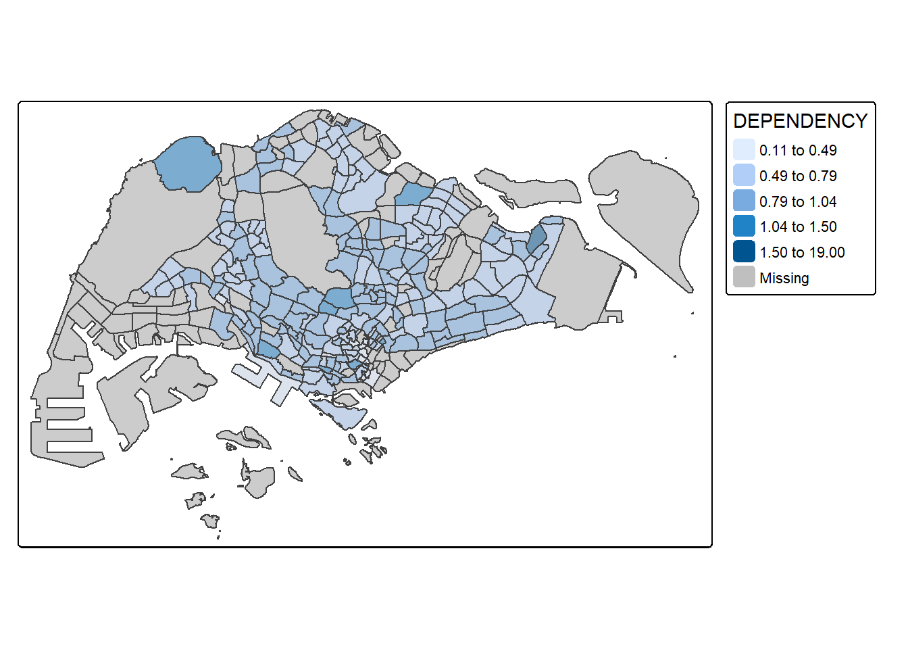
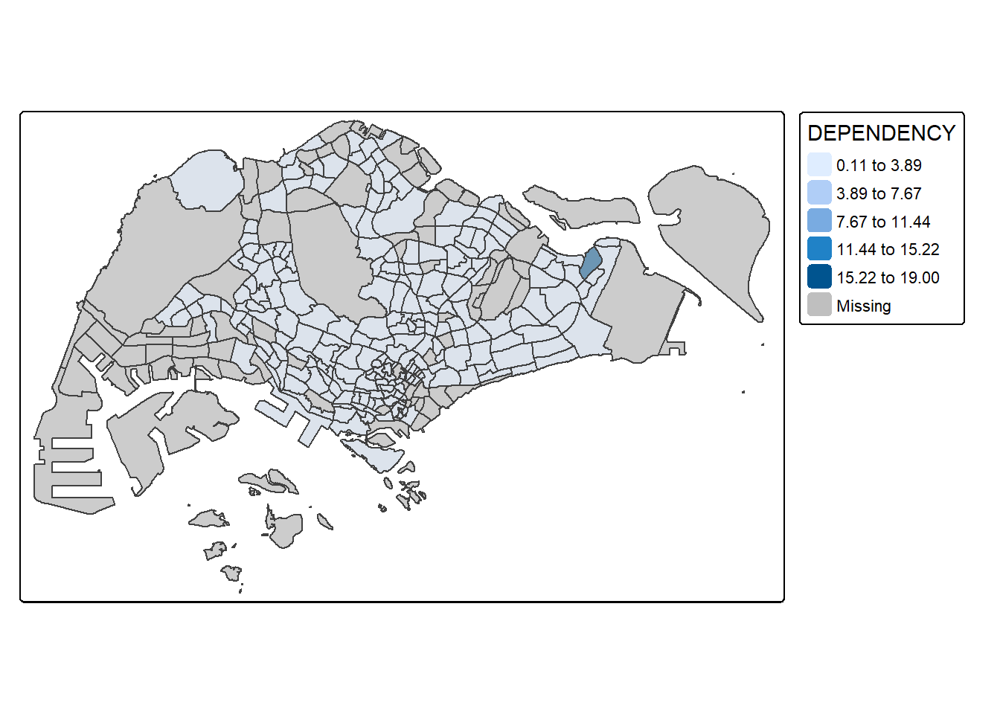
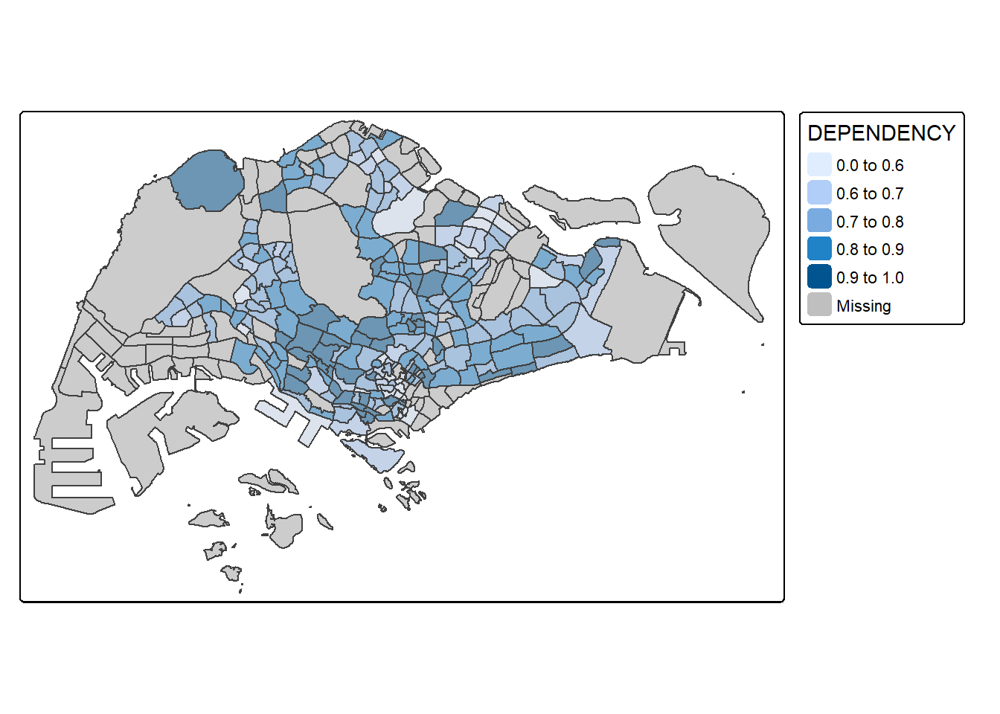
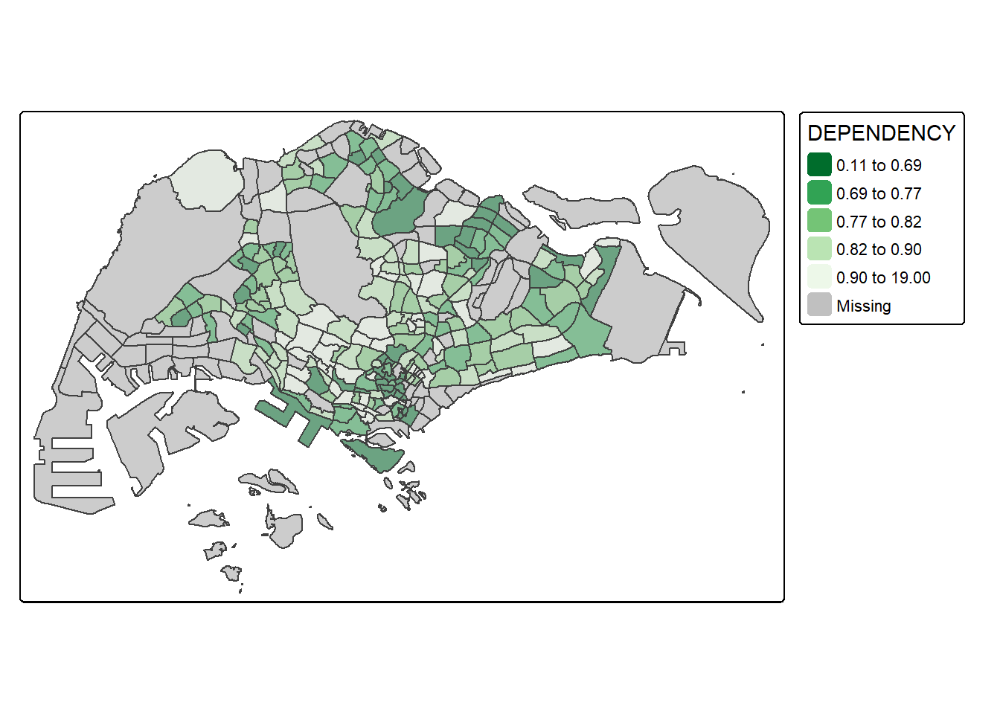
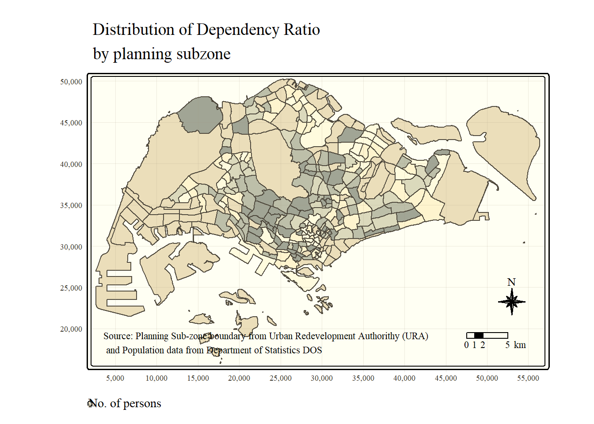
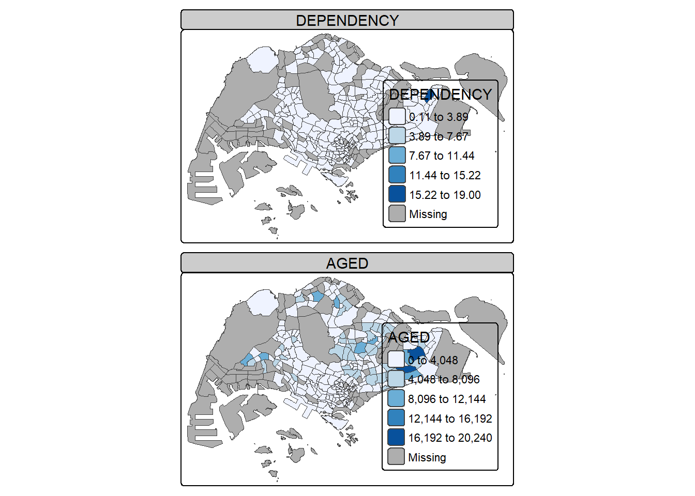
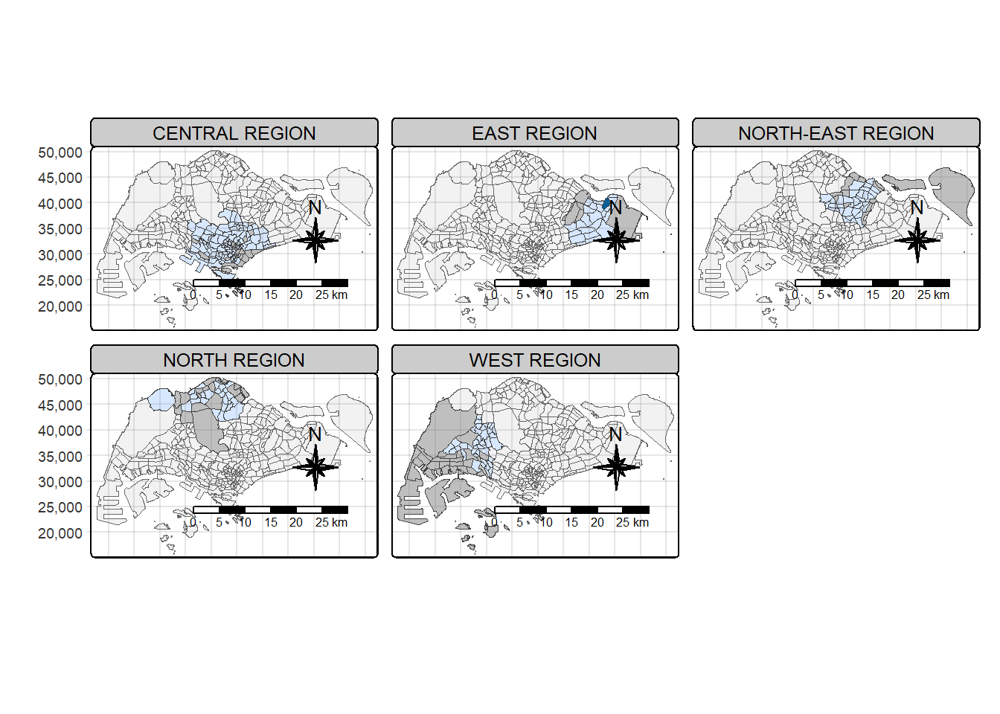

pacman::p_load(sf, tmap, tidyverse)package 'tmap' successfully unpacked and MD5 sums checked
The downloaded binary packages are in
C:\Users\rbu93\AppData\Local\Temp\RtmpwBKavK\downloaded_packagesChoropleth mapping represents geographic units (e.g., countries, states, or census areas) using patterns or color gradients. For instance, a social scientist might use it to visualize the aged population distribution in Singapore by Master Plan 2014 Subzone Boundary.
To import geospatial data into R, first load the sf package using library(sf). Then, use st_read() to read the shapefile from the specified directory and layer.
pacman::p_load(sf, tmap, tidyverse)package 'tmap' successfully unpacked and MD5 sums checked
The downloaded binary packages are in
C:\Users\rbu93\AppData\Local\Temp\RtmpwBKavK\downloaded_packagesmpsz <- st_read(dsn = "data/geospatial",
layer = "MP14_SUBZONE_WEB_PL")Reading layer `MP14_SUBZONE_WEB_PL' from data source
`C:\privatejet\ISSS608\Hands-on_Ex\Hands-on_Ex08\data\geospatial'
using driver `ESRI Shapefile'
Simple feature collection with 323 features and 15 fields
Geometry type: MULTIPOLYGON
Dimension: XY
Bounding box: xmin: 2667.538 ymin: 15748.72 xmax: 56396.44 ymax: 50256.33
Projected CRS: SVY21sf objects in R automatically limit rows displayed to 10 by default to prevent overwhelming the console. This behavior is controlled by the print.sf() method, which optimizes the display for spatial datasets. Users can override this limit using print(mpsz, n = X) or head(mpsz, X) to show more rows.
To import attribute data into R, first load the readr package using library(readr). Then, use read_csv() to efficiently read the CSV file into a dataframe for analysis.
popdata <- read_csv("data/aspatial/respopagesextod2011to2020.csv")Before creating a thematic map, a data table with year 2020 values must be prepared, including variables PA, SZ, YOUNG, ECONOMY ACTIVE, AGED, TOTAL, and DEPENDENCY. These variables represent age group distributions, with YOUNG (0-24 years), ECONOMY ACTIVE (25-64 years), AGED (65+ years), TOTAL (all age groups), and DEPENDENCY (ratio of young and aged to economy active population).
The data wrangling process uses pivot_wider() from the tidyr package to reshape data, while mutate(), filter(), group_by(), and select() from dplyr help with data transformation, filtering, aggregation, and column selection.
popdata2020 <- popdata %>%
filter(Time == 2020) %>%
group_by(PA, SZ, AG) %>%
summarise(`POP` = sum(`Pop`)) %>%
ungroup() %>%
pivot_wider(names_from=AG,
values_from=POP) %>%
mutate(YOUNG = rowSums(.[3:6])
+rowSums(.[12])) %>%
mutate(`ECONOMY ACTIVE` = rowSums(.[7:11])+
rowSums(.[13:15]))%>%
mutate(`AGED`=rowSums(.[16:21])) %>%
mutate(`TOTAL`=rowSums(.[3:21])) %>%
mutate(`DEPENDENCY` = (`YOUNG` + `AGED`)
/`ECONOMY ACTIVE`) %>%
select(`PA`, `SZ`, `YOUNG`,
`ECONOMY ACTIVE`, `AGED`,
`TOTAL`, `DEPENDENCY`)Before performing the georelational join, the PA and SZ field values must be converted to uppercase to match the formatting of SUBZONE_N and PLN_AREA_N, which are already in uppercase. This ensures a proper match between the datasets.
popdata2020 <- popdata2020 %>%
mutate_at(.vars = vars(PA, SZ),
.funs = funs(toupper)) %>%
filter(`ECONOMY ACTIVE` > 0)mpsz_pop2020 <- left_join(mpsz, popdata2020,
by = c("SUBZONE_N" = "SZ"))write_rds(mpsz_pop2020, "data/rds/mpszpop2020.rds")There are two ways to create a thematic map using tmap:
Use qtm() for a quick and simple thematic map.
Use tmap elements for a highly customizable map with detailed styling.
To use tmap for thematic mapping in R, first install it using install.packages("tmap"). Then, load the package with library(tmap) to access functions like tmap_mode() and qtm().
tmap_mode("plot")
qtm(mpsz_pop2020,
fill = "DEPENDENCY")
While qtm() allows for quick and easy choropleth mapping, it limits control over individual layer aesthetics. For high-quality cartographic maps, tmap’s drawing elements should be used for better customization.
tm_shape(mpsz_pop2020)+
tm_fill("DEPENDENCY",
style = "quantile",
palette = "Blues",
title = "Dependency ratio") +
tm_layout(main.title = "Distribution of Dependency Ratio by planning subzone",
main.title.position = "center",
main.title.size = 1.2,
legend.height = 0.45,
legend.width = 0.35,
frame = TRUE) +
tm_borders(alpha = 0.5) +
tm_compass(type="8star", size = 2) +
tm_scale_bar() +
tm_grid(alpha =0.2) +
tm_credits("Source: Planning Sub-zone boundary from Urban Redevelopment Authorithy (URA)\n and Population data from Department of Statistics DOS",
position = c("left", "bottom"))
The core structure of tmap starts with tm_shape() to define the input data, followed by layer elements like tm_fill() or tm_polygons(). In the example below, tm_shape(mpsz_pop2020) specifies the dataset, while tm_polygons() renders the planning subzone polygons.
tm_shape(mpsz_pop2020) +
tm_polygons()
tm_shape(mpsz_pop2020)+
tm_polygons("DEPENDENCY")
tm_shape(mpsz_pop2020)+
tm_fill("DEPENDENCY")
tm_shape(mpsz_pop2020)+
tm_fill("DEPENDENCY") +
tm_borders(lwd = 0.1, alpha = 1)
Most choropleth maps employ some methods of data classification. The point of classification is to take a large number of observations and group them into data ranges or classes.
tmap provides a total ten data classification methods, namely: fixed, sd, equal, pretty (default), quantile, kmeans, hclust, bclust, fisher, and jenks.
To define a data classification method, the style argument of tm_fill() or tm_polygons() will be used.
tm_shape(mpsz_pop2020)+
tm_fill("DEPENDENCY",
n = 5,
style = "jenks") +
tm_borders(alpha = 0.5)
tm_shape(mpsz_pop2020)+
tm_fill("DEPENDENCY",
n = 5,
style = "equal") +
tm_borders(alpha = 0.5)
summary(mpsz_pop2020$DEPENDENCY) Min. 1st Qu. Median Mean 3rd Qu. Max. NA's
0.1111 0.7147 0.7866 0.8585 0.8763 19.0000 92 tm_shape(mpsz_pop2020)+
tm_fill("DEPENDENCY",
breaks = c(0, 0.60, 0.70, 0.80, 0.90, 1.00)) +
tm_borders(alpha = 0.5)
tmap supports colour ramps either defined by the user or a set of predefined colour ramps from the RColorBrewer package
tm_shape(mpsz_pop2020)+
tm_fill("DEPENDENCY",
n = 6,
style = "quantile",
palette = "Blues") +
tm_borders(alpha = 0.5)
tm_shape(mpsz_pop2020)+
tm_fill("DEPENDENCY",
style = "quantile",
palette = "-Greens") +
tm_borders(alpha = 0.5)
Map layout refers to the combination of all map elements into a cohensive map. Map elements include among others the objects to be mapped, the title, the scale bar, the compass, margins and aspects ratios. Colour settings and data classification methods covered in the previous section relate to the palette and break-points are used to affect how the map looks.
In tmap, several legend options are provided to change the placement, format and appearance of the legend.
tm_shape(mpsz_pop2020)+
tm_fill("DEPENDENCY",
style = "jenks",
palette = "Blues",
legend.hist = TRUE,
legend.is.portrait = TRUE,
legend.hist.z = 0.1) +
tm_layout(main.title = "Distribution of Dependency Ratio by planning subzone \n(Jenks classification)",
main.title.position = "center",
main.title.size = 1,
legend.height = 0.45,
legend.width = 0.35,
legend.outside = FALSE,
legend.position = c("right", "bottom"),
frame = FALSE) +
tm_borders(alpha = 0.5)
tmap allows a wide variety of layout settings to be changed. They can be called by using tmap_style().
tm_shape(mpsz_pop2020)+
tm_fill("DEPENDENCY",
style = "quantile",
palette = "-Greens") +
tm_borders(alpha = 0.5) +
tmap_style("classic")
tm_shape(mpsz_pop2020)+
tm_fill("DEPENDENCY",
style = "quantile",
palette = "Blues",
title = "No. of persons") +
tm_layout(main.title = "Distribution of Dependency Ratio \nby planning subzone",
main.title.position = "center",
main.title.size = 1.2,
legend.height = 0.45,
legend.width = 0.35,
frame = TRUE) +
tm_borders(alpha = 0.5) +
tm_compass(type="8star", size = 2) +
tm_scalebar(breaks = c(0, 1, 2, 5), text.size = 0.8) +
tm_grid(lwd = 0.1, alpha = 0.2) +
tm_credits("Source: Planning Sub-zone boundary from Urban Redevelopment Authorithy (URA)\n and Population data from Department of Statistics DOS",
position = c("left", "bottom"))
tmap_style("white")Small multiple maps, also referred to as facet maps, are composed of many maps arrange side-by-side, and sometimes stacked vertically. Small multiple maps enable the visualisation of how spatial relationships change with respect to another variable, such as time.
In tmap, small multiple maps can be plotted in three ways:
by assigning multiple values to at least one of the asthetic arguments,
by defining a group-by variable in tm_facets(), and
by creating multiple stand-alone maps with tmap_arrange().
tm_shape(mpsz_pop2020)+
tm_fill(c("YOUNG", "AGED"),
style = "equal",
palette = "Blues") +
tm_layout(legend.position = c("right", "bottom")) +
tm_borders(alpha = 0.5) +
tmap_style("white")
In this example, small multiple choropleth maps are created by assigning multiple values to at least one of the aesthetic arguments
tm_shape(mpsz_pop2020)+
tm_polygons(c("DEPENDENCY","AGED"),
style = c("equal", "quantile"),
palette = list("Blues","Greens")) +
tm_layout(legend.position = c("right", "bottom"))
In this example, multiple small choropleth maps are created by using tm_facets().
tm_shape(mpsz_pop2020) +
tm_fill("DEPENDENCY") +
tm_scale_intervals(values = "brewer.blues") + # Fix classification & palette
tm_facets(by = "REGION_N", free.coords = TRUE, drop.units = FALSE) + # Fix argument name
tm_layout(legend.show = FALSE,
title.position = c("center", "center"),
title.size = 20) +
tm_borders(fill_alpha = 0.5) + # Fix alpha parameter
tm_compass(type = "8star", size = 2) +
tm_scalebar() +
tm_grid(alpha = 0.2)
youngmap <- tm_shape(mpsz_pop2020)+
tm_polygons("YOUNG",
style = "quantile",
palette = "Blues")
agedmap <- tm_shape(mpsz_pop2020)+
tm_polygons("AGED",
style = "quantile",
palette = "Blues")
tmap_arrange(youngmap, agedmap, asp=1, ncol=2)
Instead of creating small multiple choropleth map, you can also use selection funtion to map spatial objects meeting the selection criterion.
tm_shape(mpsz_pop2020[mpsz_pop2020$REGION_N=="CENTRAL REGION", ])+
tm_fill("DEPENDENCY",
style = "quantile",
palette = "Blues",
legend.hist = TRUE,
legend.is.portrait = TRUE,
legend.hist.z = 0.1) +
tm_layout(legend.outside = TRUE,
legend.height = 0.45,
legend.width = 5.0,
legend.position = c("right", "bottom"),
frame = FALSE) +
tm_borders(alpha = 0.5)
Proportional symbol maps, also called graduated symbol maps, use size to represent variations in discrete, rapidly changing phenomena like population counts. Similar to choropleth maps, they can be classed (range-graded or graduated symbols) or unclassed (proportional symbols), where symbol size is directly proportional to attribute values. In this exercise, you’ll use tmap in R to create a proportional symbol map displaying the number of wins at Singapore Pools’ outlets.
Before we get started, we need to ensure that tmap package of R and other related R packages have been installed and loaded into R.
pacman::p_load(sf, tmap, tidyverse)The data set use for this hands-on exercise is called SGPools_svy21. The data is in csv file format.
Figure below shows the first 15 records of SGPools_svy21.csv. It consists of seven columns. The XCOORD and YCOORD columns are the x-coordinates and y-coordinates of SingPools outlets and branches.
sgpools <- read_csv("data/aspatial/SGPools_svy21.csv")list(sgpools) [[1]]
# A tibble: 306 × 7
NAME ADDRESS POSTCODE XCOORD YCOORD `OUTLET TYPE` `Gp1Gp2 Winnings`
<chr> <chr> <dbl> <dbl> <dbl> <chr> <dbl>
1 Livewire (Mar… 2 Bayf… 18972 30842. 29599. Branch 5
2 Livewire (Res… 26 Sen… 98138 26704. 26526. Branch 11
3 SportsBuzz (K… Lotus … 738078 20118. 44888. Branch 0
4 SportsBuzz (P… 1 Sele… 188306 29777. 31382. Branch 44
5 Prime Serango… Blk 54… 552542 32239. 39519. Branch 0
6 Singapore Poo… 1A Woo… 731001 21012. 46987. Branch 3
7 Singapore Poo… Blk 64… 370064 33990. 34356. Branch 17
8 Singapore Poo… Blk 88… 370088 33847. 33976. Branch 16
9 Singapore Poo… Blk 30… 540308 33910. 41275. Branch 21
10 Singapore Poo… Blk 20… 560202 29246. 38943. Branch 25
# ℹ 296 more rowsThe code chunk below converts sgpools data frame into a simple feature data frame by using st_as_sf() of sf packages
sgpools_sf <- st_as_sf(sgpools,
coords = c("XCOORD", "YCOORD"),
crs= 3414)